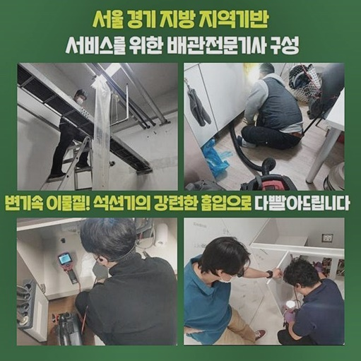
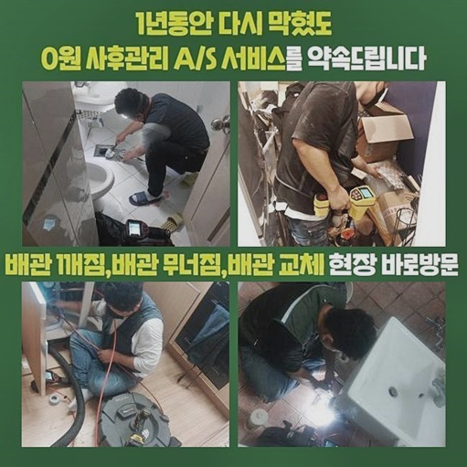
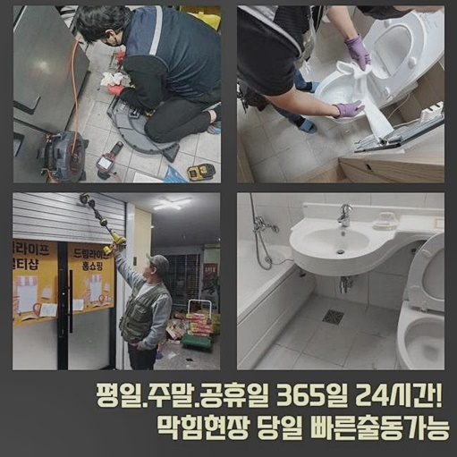
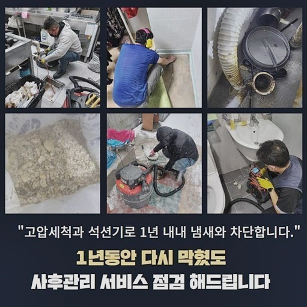
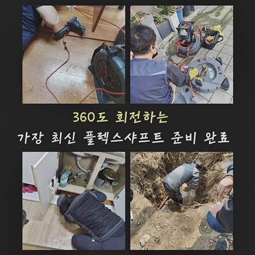

🏠 고양시 흥도동세탁실뚫음 동산동 하수구뚫는곳 통수전문
고양 동산동 하수구막힘 전문 시공 후기

📋 작업 개요
- 위치: 고양 동산동, 동산동, 고양
- 서비스 유형: 하수구막힘, 배관막힘, 뚫는업체, 고압세척, 악취차단
- 작업 일시: 2024. 8. 15. 17:00
- 업체명: 하수구수사대 (010-5615-2118)
🔍 문제 상황
고양시 흥도동세탁실뚫음 동산동 하수구뚫는곳 통수전문
여러 명이 오가던 상가건물 내부에서 하수도가 꽉 막혔다는 황급한 연락을 받고 긴급하게 문제 지역으로 자리를 옮겨 수습을 해드렸습니다
수많은 판매업소가 손님 맞이를 하는 다중 상업지는 특히나 빈번하게 하수구 오류가 생길 확률이 높으니 유의해야 합니다
통수가 시원치 않을 때 조속한 대처가 발휘되지 못한다면 급속도로 피해 수준이 증가할 수 있으므로 빠르게 스케줄을 조정하여 빠른 속도로 현장을 달려가고 있습니다
상가 건물은 다수의 영업장들이 영업을 이어가는 만큼 쥐도 새도 모르게 갖가지 오염 물질들이 메인 배관 가운데로 지금 이순간에도 누적되고 있어요
고객님께서는 한 식당 매장을 대표하는 사장님이셨는데 불현듯 생겨버린 하수구의 장애에 더불어 물도 거꾸로 솟아오르면서 매장 자체를 열지 못하시던 난감함을 안고 계셨네요
사전에 이야기를 나눠보았더니 불과 엊그제부터 어쩐지 시원치 않은 모습들이 눈에 띄었는데 금방 다시 개선될거라고 흐린 눈으로 보면서 관심을 끄고 영업했다고 하셨네요
하수관에서 일어나는 일들은 일상에서 쓰는 생활용수와 긴밀한 영향을 주고받기 때문에 조금이나마 고충을 축소하고 싶으시다면 의심할 지점이 보일 때 늦지 않게 대처해야 합니다
약속시간 보다 이르게 도착하여 속히 막힌 시설물 쪽으로 가서 겉으로 드러나는 이슈들을 조사를 해보았는데 고객님께 전달해 주신 대로 이미 발생한 이후였어요

🔎 원인 분석
💡 전문가 진단: 정밀 진단 장비를 사용하여 슬러지의 고착 여부를 판명하고 타격/세척 작업을 실시했습니다.
배수구가 더러웠기 때문에 불쾌한 악취마저도 유발되는 것을 알아챌 수 있었습니다
이렇게 냄새가 더 난다면 운영에 큰 장애가 되는 동기가 될 수 있으니 분명하게 처리하는 게 좋습니다
이처럼 복잡다단한 증상을 전반적으로 개선하기 위해선 오류의 근원을 진단하고 적절한 솔루션을 발동시켜서 작업해 주는 것이 좋은 것입니다
얼마나 문제가 진척되었나 알아내려면 특수 장비인 카메라 촬영이 이뤄져야 합니다
잘 휘어지는 노즐을 탑재했다는 이점이 있어서 육안으로는 판별하기 힘든 배관 안을 자세히 엿볼 수 있도록 돕는 장비라고 할 수 있어요
같이 붙어있는 모니터를 주의 깊게 보며 현황을 확인 후 밑으로 진출해 나가면 오늘의 하수구 고장이 발원한 장소와 부가적으로 불순물 성격까지 데이터를 입수할 수 있습니다
전문적 카메라를 적용해서 전반적인 진단을 거쳐본 결과로 천장 부분에 놓여있는 배관에서 과거와는 다른 증상들이 나타났다는 점을 알아내게 되었어요
파이프의 깊은 곳까지 조사해 보니 끈적거리는 기름 슬러지가 뭉쳐있는 모양으로 말라붙어 있었으며 어느 기점에 붙어버린 찌꺼기는 물에 맞닿아서 부패가 한창 진행되던 난감함을 안고 계셨네요
보통 하수구 곤란이 있는 작업 현장을 둘러보면 보통은 기름진 성분의 노폐물이 관로의 벽체에 상당수를 차지하고 있습니다
오일층은 하수와 절대 안 섞이는 성격을 띠고 있으므로 배관 안에 약간이라도 겹쳐지기 시작하면 뭉쳐있는 모양으로 변성이 되는 것은 기본이고 덩어리는 더 커져서 물이 나가지 못하게 차단합니다

🔧 작업 과정
확인한 배관의 상황이 그리 좋지는 않았기에 순차적으로 장치를 써서 뚫고 정돈하는 것이 방책이겠다 싶었어요
뱅글뱅글 돌아가는 샤프트를 가동하여 관찰된 막힘 사안을 소거해 주고 작업하기 좋은 환경을 구축한 뒤 고압세척을 통한 작업을 하는 노선으로 정했습니다
샤프트는 힘이 세서 단단한 물질을 유연하게 풀어주는 효능이 있는 도구인데다 끝에 장착된 체인형태의 노커가 관로가 입는 손상을 줄이고 강도 조절이 가능하다는 메리트가 있습니다
일부분에 몰려있는 오물때문에 막히고 역행하는 사건이 유발됐다면 단지 샤프트만 회전시키는 걸로도 하수의 배출 장애를 개선하게 됩니다
채워졌던 관로 속이 나아졌다 싶다면 다음은 배관이 설치되어 있는 장소로 옮겨 고압세척 기기를 통한 절차를 거치게 됩니다
천장 부근의 작업이었기에 이어갔기 때문에 안전장치를 설치하고 작업에 임하게 됐어요
단번에 뚫는 작업이라 상당량의 침전물들이 마그마처럼 튀어나올 가능성이 높기에 빈 곳이 없도록 비닐로 완전히 덮어둔 이후에 작업을 착공하고 있어요
이 기기는 강하게 압축된 물을 뿜어내어 한방에 정돈을 해주는 업무인데 무르지 않고 밀도있게 덩어리지거나 찌든 때 같은 노폐물까지 단박에 제거를 해냅니다
그러나 주의해야할 점은 환경에 걸맞는 레벨을 변경할 수 있어야 하는 등 작동법을 간파한 전문가가 핸들링해야 안전해요!
무조건 강하게만 나가는 게 아니라 타겟이 아닌 곳에 데미지가 유발되지 않도록 특성에 맞게 압력을 달리하여 세척하는 기술이 필요합니다
해당 기계가 만들어내는 실제적인 압박감은 보통 생각하시는 것보다 막대한 힘을 보유했기에 계획적이지 않은 접근으로 업무에 임한다면 배관이 자극받는 일을 일으켜 물이 새는 끔찍한 사건같은 오히려 악화가 되어버릴 사태를 초래하게 됩니다
많은 현장에서 배운 노하우를 통하여 얻어냈기에 조심성이 필요함을 깊이 있게 알고 끝까지 안전하게 시공을 마무리하려고 심혈을 기울이고 있습니다
쾌적해진 하수도의 환경이 조성될 수 있게 장비를 가동하는 업무에 돌입하기 이전에 반드시 배관의 강도와 조건을 체크하는 사전 과정을 거쳐 안전한 정도를 정합니다
세정이 다 마감하고 내시경탐사를 이어가면 전과는 큰 격차로 변화한 배관의 형상을 얻을 수 있게 됩니다
다채로운 업종의 가게들이 밀접하게 이어져 있는 상가형태의 빌딩이면 평균 상황에 맞는 시기를 결정해서 세척 서비스를 받아본다면 하수구 막힘때문에 빚어진 곤란함을 얼마든지 없앨 수 있게 됩니다
하수도의 고장과 같은 예고치 않은 사고에 직면할 땐 무엇보다도 빠른 문제점의 개선이 건물의 안녕을 돕습니다


✅ 작업 완료
골든 타임 이내에 하수시설이 원상복구가 된다면 더욱 합리적인 비용으로도 고쳐나갈 수 있는 것을 꼭 전달드리고 싶습니다!
차일피일 처리를 지연한다면 더 오래 불편함을 참아야하는 상황이 유발될 수 있으니 문제점을 느끼는 즉시 의뢰를 주셔야만 초반부에 빠른 시일 내에 장애물을 회복시켜드릴 수 있습니다
과거의 성공 내역을 지닌 저희 기술 직원이 빠른 스케줄을 잡아드려서 어려움을 모두 씻어내려줄 제일 효율적인 방도를 제시해 드리겠습니다
설비적 개선이 필요하시다면 시간대에 전혀 무관하게 든든하게 처리해주는 업체인 저희에게 도움 구해주시기 바랍니다



⚠️ 하수구 배관 막힘 예방 및 관리 가이드
- ✅ 머리카락, 비닐, 물티슈 등 물에 분해되지 않는 이물질은 하수구 유입을 절대 금지해 주세요.
- ✅ 하수구 거름망을 씌우고 모여진 이물질은 주기적으로 쓰레기통에 바로 비워주셔야 합니다.
- ✅ 배관 노후가 심할 경우 이물질이 더 쉽게 걸리므로 주기적인 배관 세척(고압세척 등)을 권장합니다.
- ✅ 작업 후 1년 이내 재발 시 하수구수사대에서 무상 A/S 보증 서비스를 제공합니다.
💡 핵심 정리
- 확실한 장비 작업(내시경 점검 및 샤프트 스케일링)으로 원인을 뿌리 뽑습니다.
- 작업 후 1년 이내에 동일한 부위 재발 시 100% 무상 A/S 서비스를 보장합니다.
- 서울 · 경기 · 인천 전 지역에 24시간 언제든 긴급 출동할 수 있도록 항시 대기 중입니다.
❓ 자주 묻는 질문 (FAQ)
🚨 고양 동산동 하수구막힘 문제로 고민이신가요?
정확한 원인 진단과 확실한 시공으로 재발 없는 해결을 약속드립니다.
24시간 긴급 출동 | 서울 · 경기 · 인천 전지역 | 1년 내 재발 시 무상 A/S